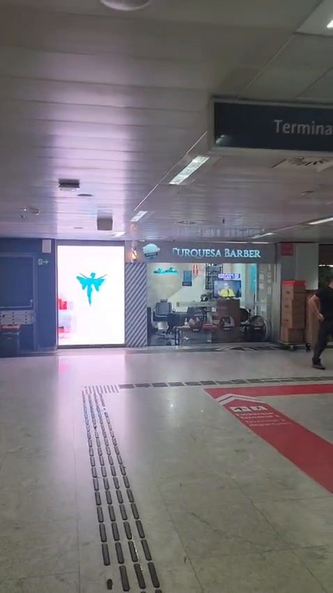
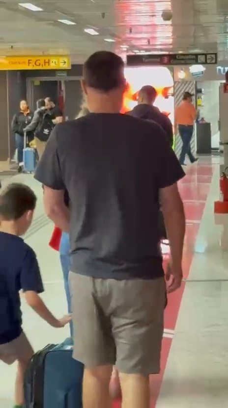

O trajeto
Conheça o corredor e o contexto de circulação.

Transforme um momento de autocuidado em uma experiência com a sua marca no Aeroporto de Guarulhos.
Conectamos ativações, experimentação de produtos e mídia integrada em um espaço onde o consumidor pode conhecer, sentir e escolher sua marca.
No espaço de experiência Brand Lab Experience, junto ao corredor de conexão externa entre os Terminais 2 e 3.
Durante uma viagem, uma pausa para cuidar de si pode abrir espaço para descobrir um produto.
No espaço da Brand Lab Experience, esse encontro pode acontecer durante uma manicure, um atendimento de cabelo ou um serviço de barbearia. O consumidor conhece o produto em uso, recebe orientação de uma profissional e pode continuar a experiência com a compra.
A BL EXP conecta sua marca a esses momentos, com ações planejadas para o seu objetivo.
Conhecer
Apresente sua marca e desperte interesse.
Experimentar
Coloque o produto em contato com o consumidor, em um contexto adequado ao seu uso.
Criar preferência
Valorize os diferenciais do produto com demonstração e orientação profissional.
Estimular a compra
Conecte a experiência à oferta, conforme a disponibilidade e a operação acordadas.
A mídia desperta o interesse
O painel de LED apresenta a campanha e amplia a presença da marca no entorno do espaço.
A ativação aproxima
Produtos, materiais e ações dentro da unidade convidam o consumidor a conhecer a proposta.
A experiência demonstra o valor
A aplicação durante o atendimento permite perceber características do produto com orientação profissional.
A jornada pode continuar após a visita
QR codes, conteúdos, cupons e canais digitais podem conectar a experiência a um novo contato com a marca.
As possibilidades são definidas conforme o produto, o objetivo da campanha e a viabilidade de execução.
O espaço de experiência da Brand Lab Experience reúne serviços de beleza e autocuidado em um ambiente de circulação de passageiros, tripulantes e profissionais do aeroporto.
Localizada junto ao corredor de conexão externa entre os Terminais 2 e 3, permite combinar presença de marca no trajeto com experiências dentro do salão.
Beleza e autocuidado
Serviços que permitem integrar produtos à rotina de atendimento.
Contato com profissionais
Orientação no momento em que o consumidor conhece e utiliza o produto.
Presença física e digital
Ativação no espaço, com apoio do painel e possibilidades de continuidade pelos canais da marca.

Apresentar um lançamento
Introduza um produto com demonstração, comunicação no espaço e uma campanha integrada no painel.
Estimular a experimentação
Permita que o consumidor conheça o produto durante um serviço compatível com sua aplicação.
Valorizar os diferenciais
Prepare as profissionais para explicar os benefícios e orientar o uso de forma consistente com a comunicação da marca.
Apoiar a venda no local
Combine exposição de produtos, abordagem durante o atendimento e condições comerciais acordadas.
Ampliar uma campanha
Leve o conceito da campanha para o ambiente físico, conectando mídia, materiais e experiência.
Dar continuidade ao relacionamento
Use QR codes, conteúdos ou benefícios para convidar o consumidor a seguir em contato com a marca.
Ações sujeitas à compatibilidade com a unidade e ao escopo contratado.
Quero explorar as possibilidadesCuidados capilares
Uma campanha apresenta o produto no painel. Durante o atendimento, a profissional aplica a linha, explica sua utilização e apresenta a possibilidade de compra.
Esmaltes e cuidados com as unhas
Uma coleção ganha destaque na comunicação e fica disponível para aplicação. A cliente escolhe a cor, experimenta o acabamento e conhece os demais produtos.
Barbearia e cuidados masculinos
O produto entra na rotina do serviço, acompanhado de orientação sobre aplicação e cuidados em casa.
Esses exemplos ilustram formatos possíveis. Cada projeto é desenvolvido conforme a marca, o produto e a operação do espaço.
Veja a unidade, o entorno e a estrutura de mídia que podem receber sua marca.
Conheça o corredor e o contexto de circulação.
Veja a entrada e a localização do espaço Brand Lab Experience.
Confira o painel em funcionamento e sua relação com a unidade.
1. Entendemos o desafio
Conversamos sobre público, produto, campanha e resultado desejado.
2. Desenhamos a experiência
Definimos como a marca participará do espaço e quais contatos fazem sentido para o consumidor.
3. Alinhamos a execução
Combinamos materiais, produtos, preparação das profissionais, mídia, cronograma e responsabilidades.
4. Ativamos a presença da marca
Executamos o escopo aprovado, integrando os pontos de contato definidos.
5. Acompanhamos as entregas
Organizamos os registros e indicadores acordados para avaliar a ação e orientar os próximos passos.
A forma de acompanhar a campanha faz parte do planejamento. Conforme a ação contratada e os dados disponíveis, podemos definir indicadores como:
Os indicadores e a forma de coleta são definidos na proposta. Resultados comerciais dependem da campanha e de sua execução.
Quer apresentar um lançamento, estimular experimentação ou desenvolver uma presença contínua? Compartilhe seu objetivo para avaliarmos uma ação para a sua marca.
Planejamento e coordenação de ações que conectam experiência com produtos, ativação no espaço e mídia integrada no espaço Brand Lab Experience do Aeroporto de Guarulhos.
O espaço tem afinidade com marcas de beleza e autocuidado, como cuidados capilares, esmaltes e produtos de barbearia. Outras categorias podem ser avaliadas conforme sua compatibilidade com a operação.
Nas ações que envolvem aplicação, demonstração ou venda, precisamos alinhar previamente a disponibilidade, as condições de uso e a operação do produto.
Sim. A mídia pode integrar o projeto para apresentar a campanha, reforçar a mensagem e convidar o público a conhecer a experiência.
As necessidades de conceito, adaptação de peças e produção de materiais são avaliadas no briefing e detalhadas na proposta.
O período é definido conforme o objetivo, a disponibilidade e as necessidades de preparação e execução.
A proposta define as entregas, os indicadores e os registros disponíveis para acompanhamento.
O investimento considera o período, a mídia, as ativações, os materiais e a estrutura necessária para executar o projeto.
Vamos criar uma presença que o consumidor possa conhecer de perto, experimentar e levar consigo.